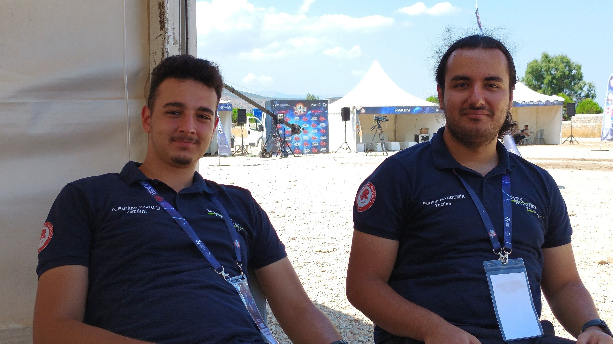

Süleyman Demirel Üniversitesi Bilgisayar Mühendisliği 3.sınıf öğrencisiyim. Lise yıllarımdan beri merak duyduğum Bilgisayarlı görü, robotik ve görüntüleme sistemleri konularında araştırmalar yapıyor ve projeler geliştiriyorum. Teknofest 2023'te Engelsiz Yaşam Teknolojileri Kategorisi'nde "Görüntü İşleme Tabanlı Protez El", Teknofest 2024'te ise Tarımsal İnsansız Kara Aracı Kategorisi'nde "StrykV" projesiyle finale kalan Dyna Robotics takımında halen yazılım geliştirici olarak rol almaktayım. C,C#,Java ve Python dillerine hakim olmakla birlikte projelerimi genellikle Python dilinde kodluyorum. Açık kaynak kodlu yazılım geliştirmeye ve takım çalışmasına önem veriyorum.